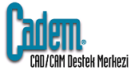
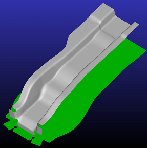
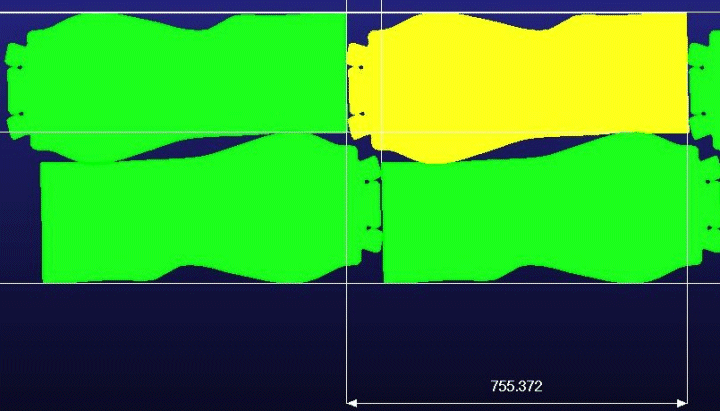
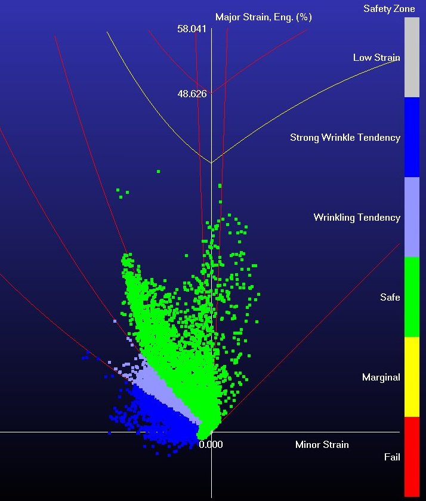
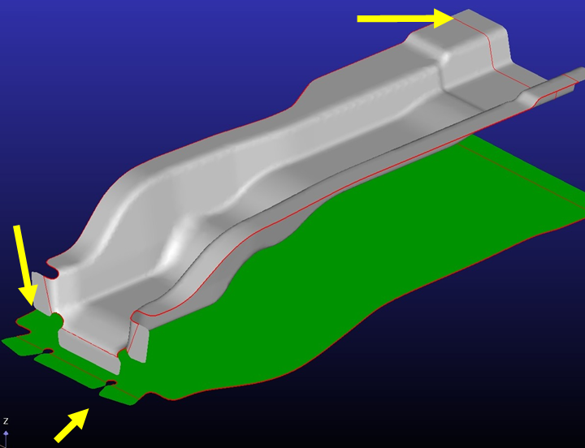
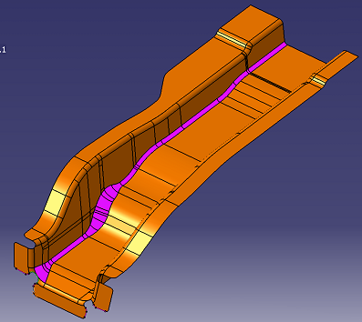
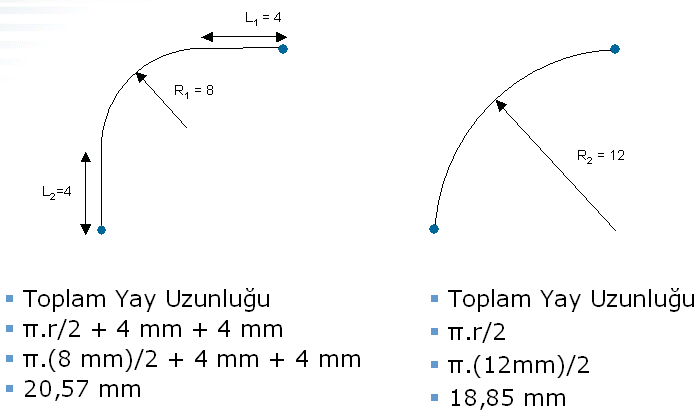

|
Ýletiþim teknolojilerini ilerlemesi ile her geçen gün daha da globalleþen bir dünyada yaþýyoruz. Globalleþme bize tüm dünyanýn nimetlerini sunmasýnýn yanýnda rekabeti de bir o kadar arttýrýyor. Artýk sadece lokal rakiplerimizle deðil tüm dünya ile rekabet etmemiz, doðru projeler ile firmamýzýn kazanç saðlamasý gerekiyor. Bu nedenle ürünümüzün maliyetini bilmek, maliyetimizi optimize etmek ve doðru teklif vermek her geçen gün daha da önem kazanýyor. Yanlýþ teklif vermemiz bize projeyi kaybetmemize ya da zararýna üretim yapmamýza mal olabiliyor. Rekabetin katý kurallarý karþýsýnda iþletmeler maliyetlerini kontrol edip; maliyetlerini nasýl azaltýp optimize edebileceklerinin yollarýný arýyorlar.
Pazarýn bu ihtiyaçlarýna cevaben yazýlým firmalarý sac parçalarýn, kalýplarýn maliyetlerini hesaplayan yazýlýmlar sunuyorlar. Yazýlýmlar arasýnda kendi segmentinde tek olan FTI (Forming Technologies Inc.) firmasýnýn çözümleri firmalara "somut ve açýkça kanýtlanabilir maliyet avantajlarý" sunuyor.
Yazýnýn devamýnda sac parça maliyetlerinin nasýl hesaplandýðý ve bu maliyetin azaltýlmasý için gerekli yaklaþýmlarýn nasýl olduðunu inceleyeceðiz.
Malzeme Maliyetinin Hesaplanmasý
Sac parçalarýn maliyetinin hesaplanmasý için, temel olarak açýnýmýnýn hesaplanmasý ve bu açýnýmýn sac banda dizinimi yapýlmasý gereklidir. Günümüzde çoðu firma bu iþlemleri manüel yaparak zaman kaybetmekte ve optimum yerleþim alternafini deneme-yanýlma yöntemi ile araþtýrmaktadýrlar. Bu yöntem hatalara açýk olduðu gibi optimum alternatife uzak sonuçlar verebilmektedir. Bu aþamada yapýlacak çok küçük bir hata iþletmelerin sac tüketim miktarý ile çarpýldýðý zaman büyük kayýplarýn verildiðini ortaya çýkaracaktýr.

Bu sürece odaklanmýþ yazýlýmlar kullanýldýðýnda çözüm daha hýzlý ve daha doðru olarak elde edilebilir. Parçanýn açýným hesabý için malzeme karakteristikleri dikkate alýnýr, maliyetinin hesabý için de sac rulonun boyutu, parçalar arasý ve bandýn uç noktalarý ile býrakýlacak malzeme paylarý gibi imalata yönelik özellikler dikkate alýnýr. Bu bilgilere yaklaþýk kalýp maliyeti eklenir ve parça baþý maliyet hesaplanýr. Ayrýca yazýlýmlarýn sunduðu yerleþim alternatifleri arasýndan imalat teknolojimize uyan en iyi malzeme kullaným oranlý olaný seçilebilir.

Bu baþlýkta en önemli maliyet kalemi olan malzeme maliyetinin hesabý anlatýlmýþtýr. Maliyetin hesaplanmasý sonrasýnda, maliyetinizi nasýl düþüreceðimizin araþtýrmasýna girebiliriz. Maliyet optimizasyonu için aþaðýdaki yaklaþýmlar kullanýlabilir.
1. Malzeme Tipinin Deðiþtirilmesi:
Bu yaklaþýmda maliyet avantajý olarak ayný statik özellikleri taþýyan daha ucuz sac kullanýmý yollarý aranýr. Mevcut malzemenin FLD (Forming Limit Diagram) diyagramý incelenir ve yeni durumda ortaya çýkan FLD diyagramý incelenir. Eðer daha ucuz sac kullanýlmasý halinde parçanýn taþýdýðý statik özellikler tolere edilebilir seviyede ayný ise daha ucuz sac kullanýlýr.

2. Malzeme Kalýnlýðýnýn Deðiþtirilmesi:
Bu yaklaþýmda ayný geometride daha ince sac kullanýlmasý halinde parçanýn taþýdýðý statik özelliklerin deðiþimi izlenir. Örneðin, 2.5mm'lik sac kullandýðýmýz bir parçada 2.25mm kalýnlýðýnda bir sac kullanýldýðýmýz durumda parçanýn FLD diyagramý incelenir. Eðer daha ince olan sac istediðimiz özellikleri taþýyor ise parçamýzý daha hafife ve ucuza imal edebiliriz demektir.
3. Malzeme Kalýnlýðý ve Tipinin Deðiþtirilmesi:
Bu yaklaþým, yukarýda anlatýlan yaklaþýmýn birleþimidir. Hem daha ucuz olan sac, hem de daha ince sac kullanýlarak parça maliyetinin düþürülme yollarý aranýr.
4. Parça Geometrisinin Deðiþtirilmesi:
Parça geometrisinin deðiþtirilmesi yaklaþýmýnda üzerinde çalýþýlan parçanýn fonksiyonunu korumak þartý ile maliyetin nasýl azaltacaðýnýn yollarý aranýr.

Sac parçalarýn imalat safhasýna baktýðýmýzda açýnýmý yapýlan parça, imalat kýsýtlarý eklenerek (addendum) dizinimi yapýlýr. Dizinim alternatiflerinin optimumu seçilmesi sonrasýnda bu dizinim referans alýnarak parça geometrisinde kullanýcýnýn girdiði deðerler dikkate alýnarak deðiþiklik yapýlýr. Bu deðiþiklik dizinim pozisyonunda parçalarýn adým adým iç içe geçirilmesi þeklinde yapýlýr. Parçalarýn birbirine yakýnlaþtýrýlmasý ile parça geometrileri birbiri ile kesiþir ve bu kesiþimin parça geometrisi üzerine olana etkisi araþtýrýlýr. Kesiþim bölgesini hem 3 boyutlu geometride hem de 2 boyutlu yerleþimde görerek incelenmesi gereklidir. Bu yaklaþým parçanýn tipine baðlýdýr, güvenlik parçalarýnda bunu yapamazken kimi parçalarda ciddi kazanýmlar elde edilebilir. Yeni oluþan geometrinin analizi yapýlarak ayný statik özellikleri taþýyýp taþýmadýðý analizi yapýlýr. Uygun bulunur ise devam edilir.
Parçada yapacaðýmýz küçük kýrpma iþlemi, bize malzemeyi daha verimli kullanmamýzý ve dolayýsý ile maliyetimizi düþürme olanaðý saðlar. Bu iþlem sadece parçanýn tek tarafýnda yapýlabileceði gibi, her iki taraftan da geometrinin kýrpýlarak analizi yapýlabilir.
5. Parça Üzerindeki En Küçük Radyüsün Deðiþtirilmesi:
Sac parçalar üzerindeki bir maliyet yaklaþýmý da parça üzerinde en küçük radyüs hattýnýn tespit edilmesi ve bunu daha büyük bir radyüs yapýlmasýdýr. Bu sayede daha az malzeme ile parça imal edilebilir çünkü teorik olarak; büyük radyüsün çevresi, ayný bölgeyi kaplayan küçük radyüs çevresi ve kollarýnýn boyundan daha kýsadýr. Bu nedenle küçük radyüsün büyütülmesi ile daha az malzeme ile ayný geometri oluþturulur ayrýca daha az pres kuvveti ile ayný parça basýlabilir.

Uygulanmýþ analiz sonuçlarý, yukarýda anlatýlan yaklaþýmlar ile parça maliyetleri üzerinde %20'ye varan iyileþtirmeler yapýlabileceðini bizlere gösteriyor.

Peki, gerçek hayatta bu yaklaþýmlarý ülkemizdeki ana ve yan sanayi firmalarý için nasýl adapte edebiliriz. Bu tip teknolojilerin kullanýmý ülkemizde her geçen gün önemi artan Ar-Ge ve tasarým kabiliyetleri ile doðru orantýlý artacaktýr. Çünkü firmalar artýk katma deðer yaratarak uzun sürede kalýcýlýklarýný koruyacaklar, aksi durumda global rekabetin kurbaný olacaklar.
Bu tip teknolojiler hem ürün geliþtiren tasarým mühendislerinin, kalýp tasarým ve imalat mühendislerinin, maliyet mühendislerinin en etkili hesap ve analiz çözümleridir.
Tofaþ Türk Otomobil Fabrikasý A.Þ. (Fiat) Baþarý Öyküsü:
COST ENGINEERING bölümünde Forming Teknolojileri firmasýnýn (FTI) sunduðu COST OPTIMIZER çözümü ile Malzeme Maliyetlerini DAHA FAZLA kontrol etmeye ve optimize etmeye baþladýlar.
FIAT TOFAÞ hedefleri:
- Malzeme maliyetlerini daha doðru tahmin edebilme yeteneðini geliþtirmek & iyileþtirmek
- Yan sanayilerine verilen araç parçalarýnýn deðerinin kýsa sürede ve en doðru þekilde belirleyebilmek
FIAT TOFAÞ hedeflerine FTI'ýn sunduðu ürün yelpazesinden doðru seçimi yaparak çözüm buldu.
Artýk Maliyet Mühendisleri FTI'ýn COST OPTIMIZER ürünü bölümlerinde kullanýyorlar ve ürünün kendilerine sunduðu AVANTAJLARI þöyle sýralýyorlar:
- Malzeme maliyetini DAHA DOÐRU OLARAK ve NET BÝR ÞEKÝLDE belirlemeye baþladýlar,
- Maliyetleri tahmin eden kiþiden BAÐIMSIZ ve TUTARLI bir malzeme maliyetini tahmin edebiliyorlar,
- FÝRENÝN EN AZA indirilmesi için " Böyle olursa ne olur?" senaryolarýný yenileyerek hýzlý bir þekilde deneyebilme imkanýna sahipler.
- Tedarikçilerle çalýþýrken ciddi bir REKABET imkanýna artýk sahipler.
- Malzeme kullanýmýnda kendilerine DAHA FAZLA GÜVENÝYORLAR.
- Ekip içerisinde, Ürünün kullanýmý son derece PRATÝK ve KOLAY olduðundan özel bir eðitime gerek duymadan çok kýsa bir sürede devreye alabiliyorlar,
- HEDEF FÝYATI DAHA DOÐRU belirleyebilme imkanýna sahipler.
- FIAT TOFAS Fabrikasý ürünün firmalarýna saðladýðý avantajý þu þekilde özetliyorlar:
- Daha ilk kullanýmda baþarýlý bir ROI (Yatýrýmýn kendini amorti etmesi)
- Daha ilk analizde %8'lik bir maliyet DÜÞÜÞÜ (Özellikle MVC & D200 projelerinde)
- Belirlenmiþ fiyatta tedarikçilerle iyileþtirilebilir bir kredibilite.
- Maliyet tahmininde YÜKSEK bir performans.
- Hesaplamalar için harcanan ZAMANDA gözle görülebilir bir DÜÞÜÞ ama MALÝYET BELÝRLEMEDE gözle görülür bir DOÐRULUK.
- Firma KARLILIÐINDA ciddi bir ARTIÞ.
Not: FTI yazýlýmý hakkýnda detaylý bilgiye www.cadem.com.tr ve www.forming.com adreslerinden ulaþabilirsiniz
Ýrtibat:
Cadem CAD/CAM Destek Merkezi A.Þ.
www.cadem.com.tr
Beylerbeyi Üsküdar Ýstanbul
Tel: (216) 557 64 64
Nilüfer, Hadanaða Bursa
Tel: (224) 484 24 47
Cadem A.Þ. hakkýnda:
1998 yýlýndan beri faaliyet gösteren Cadem A.Þ. PLM çözümleri, mühendislik ve tasarým hizmetleri, optik tarama ve ölçüm sistemleri, hýzlý prototipleme üzerine faaliyet gösteren bir teknoloji firmasýdýr. IBM, Dassault Systemes, FTI, GOM, Cenit, 3D Systems gibi firmalarýn Türkiye'deki distribütörlüðünü ve uygulama mühendisliðini yapmaktadýr. Ýstanbul ve Bursa ofislerinde faaliyet gösteren Cadem A.Þ., yüksek insan kaynaklarý profili ile Türkiye'deki bir çok firmanýn danýþmanlýðýný, proje ortaklýðýný ve PLM sistemi tedarikçiliðini ve eðitmenliðini yapmaktadýr. |